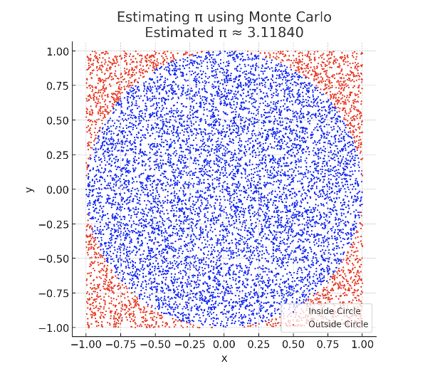

📘 Problem 2: Estimating π Using Monte Carlo Methods
Objective: Understand how to estimate the value of \pi using Monte Carlo simulations — a computational technique that relies on randomness and geometric probability.
🧠 What Are Monte Carlo Methods?
Monte Carlo methods are a class of computational algorithms that use random sampling to estimate mathematical values. One of the simplest and most visual examples is estimating \pi by randomly generating points inside a square and determining how many fall inside an inscribed circle.
This approach connects geometry, probability, and computation, and provides a hands-on way to explore the power of randomness in problem-solving.
1️⃣ Estimating π Using a Circle
We consider a unit circle inscribed in a square with side length 2. The idea is: • The area of the circle is \pi r^2 = \pi, since r = 1 • The area of the square is 4 (since side = 2) • The ratio of the circle’s area to the square’s area is: $$ \frac{\text{Area of Circle}}{\text{Area of Square}} = \frac{\pi}{4} $$
Thus, if we randomly scatter points in the square, the fraction that lands inside the circle should approximate:
So we estimate:
2️⃣ Simulation Steps
To simulate this in practice: • Generate random points (x, y) in a square from -1 to 1 • Check if the point lies inside the unit circle: $$ x^2 + y^2 \leq 1 $$ • Count how many points fall inside the circle • Use the formula to estimate \pi
3️⃣ Visualization
You can visualize the result by plotting the randomly generated points: • Points inside the circle: typically colored blue • Points outside the circle: typically colored red
This plot visually shows how the estimate becomes more accurate as the number of points increases.
4️⃣ Buffon’s Needle (Advanced Extension)
Another classic Monte Carlo method for estimating \pi is Buffon’s Needle. In this experiment: • Drop a needle of length l on a plane with parallel lines spaced a distance d apart. • The probability of the needle crossing a line depends on the angle and position. • The formula to estimate \pi is: $$ \pi \approx \frac{2 \cdot l \cdot \text{(number of throws)}}{d \cdot \text{(number of crosses)}} $$
This method requires simulating both the angle and position of the needle for each drop.
✅ Summary of Key Concepts
Concept Formula / Description Circle-based estimation
$$ \pi \approx 4 \cdot \frac{\text{inside}}{\text{total}} $$ Buffon’s Needle estimation \pi \approx \frac{2lN}{dC}, $$ where C is number of crosses Point inside circle condition $$ x^2 + y^2 \leq 1 $$ Monte Carlo idea Use randomness to estimate deterministic quantities
📌 Applications
Monte Carlo methods are used in: • Statistical sampling and simulations • Computational physics and chemistry • Financial risk modeling • Computer graphics and gaming • Numerical integration and probabilistic estimation
🖼️ Diagram
Figure: Estimating π with Random Points

In this diagram, we simulate 10,000 random points within a square. Points inside the circle are shown in blue, and those outside in red. As more points are added, the ratio of inside-to-total approaches \(\(\pi/4\)\) allowing us to estimate \(\(\pi\)\) with increasing accuracy.